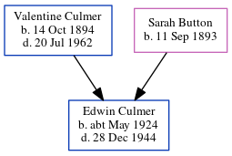

William Towner 1892 - c1970
[ Home ] | [ Calendar ] | [ Surnames Index ] | [ Errors ] | [ Family History ]William Towner, the husband of Emily Rose Culmer (the second cousin twice-removed on the mother's side of Nigel Horne), was born in Tunbridge Wells, Kent, England on 6 Feb 18921,2,3. He married Emily (a domestic general servant) at St Nicholas, Strood, Kent, England on 5 Aug 19124. On 29 Sept 1939, he was living at 96 Maida Street, Chatham, Kent1.
He died c. Aug 1970 in Chatham, Kent, England3.
Citations
- 1939 Register - Findmypast (was recorded at this address)
- England & Wales births 1837-2006 - Findmypast
- England & Wales deaths 1837-2007 - Findmypast
- England & Wales Marriages 1837-2005 - Findmypast
Media
1939 Register Transcription - TNA-R39-1691-1691A-025-28
England & Wales marriages 1837-2005 - BMD/M/1912/3/AZ/001053/008
England & Wales Births 1837-2006 - BMD-B-1892-1-AZ-000563-132
England & Wales deaths 1837-2007 - BMD/D/1970/3/AZ/001087/043
Family Tree
Map
Generated by ged2site. Last updated on Jul 3, 2024
Known Issues
No records of living with anyone